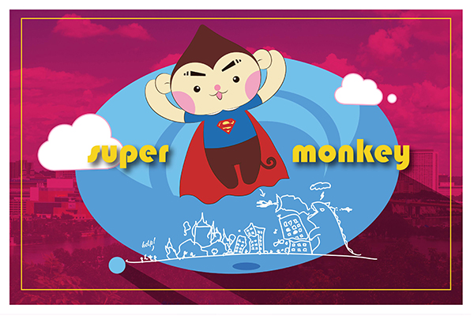

Bellow is my vecter work. I was planing to create an animal hero cartoon icon with a cute outlook and some vivid colors which feels like the superman. I consided some normal cute animal at first,such as cat,dog or bear, but I final decided to creat a monkey hero when i inspired by the Chiese story-WuKong.
☁ ☁ ☁ ☁ ☁ ☁

Welcome| Raster| Vecter| TBM| Print Layout| About me|